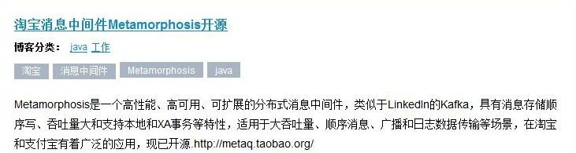

2012/6/8 posted in 技术
由于要定期对收藏的微博进行整理并删除，又想保留一份原始数据，于是想到了备份一下，在网上找了找没有满意的就自己写了一个，顺便体验一下微博开放的api.
2012/5/25 posted in 技术
文章内容和分类中有中文比较麻烦，网上找了很多方法都不管用,我在windows7下cywin的解决办法是：
两步骤缺一不可
2011/4/14 posted in 技术

RSS